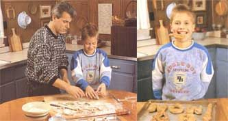

NATURAL HEALTH
Granted it's messy, but cooking with kids promotes a whole new set of skills-the fun way.
I know what you're thinking. You are envisioning yourself knee deep in an avalanche of flour. The mixer is buzzing at top speed, splattering the wallpaper with brownie batter. Your children are fencing with shish kebab skewers and the cat and dog are fighting over food remains. As the paramedics carry you out the door, you imagine the headlines in the local paper, "Woman Collapses After Cooking with Children."
Sure, cooking with your children is a messier and more time-consuming project than cooking solo; it's definitely not something to undertake when you're tired and pressed for time. You don't need to scrounge through women's magazines, however, in order to have a vast array of cutesy children's recipes. These are often time consuming and very rarely nutritious.
Your preschooler will have just as much fun tearing up lettuce, chopping up fruit with a plastic knife, or sifting flour. When my son was about two years old, I figured it was about time to begin improving his culinary awareness skills. (After all, the world needs no more untrained men in the kitchen.) These days, everyone needs to know their way around the kitchen for survival purposes-the days of June and Ward Cleaver are over.
There are other valid reasons, of course, for inviting the kids into the kitchen. I know you think I'm going to say that it's one of those special parent-child bonding experiences. Of course it can be, but food preparation skills are also a springboard for learning. Cooking with your children will promote development in the following areas:
Cooking encourages your child's independence and autonomy. Children are often proud of their kitchen creations, and will often boast, "Taste it! I made it all by myself." Also, here's the perfect opportunity for your child to try a new vegetable or food that is strongly disliked. Being rather egocentric, young children will generally eat what they've prepared. Salads can take on a whole new meaning for children when they prepare it themselves. Also, learning about food will help children make healthier food choices.
You can expand your child's vocabulary by incorporating new words into your food preparation: saute, fold, mince, blend, and so on. Your child will learn how to do the activities by doing them. Have older children read and follow recipes, step by step, in order to learn sequencing and how to recall information. Later, you can ask your child to explain to you how "we made jello today."
Cooking can be scientific because of experimentation involved and the theory of cause and effect. Discuss with your child how a liquid turns into a solid when you're making ice cream or popsicles. Help him discriminate between two smells, such as cinnamon and almond extract. Make predictions, asking your child questions such as, "What do you think would happen if we forgot to put in the baking powder?" or "What would have happened if we had doubled the amount of yeast in the bread?"
Work on pre-math skills, such as sequencing by nesting measuring cups inside one another or arranging measuring spoons by size. Sorting objects is also a pre-math skill. Ask your pre-schooler to sort food items; putting chocolate chips in one pile, raisins in another, nuts in another, etc., pointing out both their similarities and differences.
Whenever children are cutting, rolling, stirring, pounding, chopping, and peeling, they are manipulating and strengthening muscles in their arms, hands, and fingers. Holding utensils, measuring ingredients, and pouring liquids helps develop coordination and dexterity. Before you round up all your kids and head for the kitchen, here are a few hints to make the experience as pleasurable as possible:
Make a cooking appointment with only one child at a time. (If you have more than one child, rotate. You might want to call the others in to play with the playdough or decorate cookies after the food preparation with the one child.) Set up a special time with your child when there are few distractions, such as when older children are at school or the baby is napping. Be sure to allow enough time. He/she may want to sift the flour for 30 minutes just for fun. Have all the prep work done beforehand: clear all surfaces and have everything you need available so that your child won't become restless and bored. Keep the recipes simple at first. Young children are happy merely making cookiecutter sandwiches for lunch. Allow your child to be creative. There isn't always one correct way to prepare food. (For instance, my son puts cajun seasoning in his own marinara sauce.) Don't be afraid to fail. Children need to learn that life doesn't always flow as planned. Discuss with your child ways to improve your recipe the next time that you make it. Schedule a regular time for your children to help you in the kitchen. Post jobs on a bulletin board. Even a three year old can set the table and learn one-to-one correspondence.
1 teaspoon yeast (I use powdered) 1 cup warm water 1/2 teaspoon honey 3/4 cup whole wheat flour (not pastry flour) plus 3/4 % cup unbleached white flour. 1 egg sesame seeds optional: 1/3 cup cheddar cheese, grated
Utensils: large mixing bowl, two medium bowls, measuring cups and spoons cheese grater cookie sheet
Preheat oven to 425°F. Start yeast according to package directions. Then mix yeast, honey, and water; wait for five to 10 minutes until mixture gets foamy. While waiting, grate cheddar cheese.
Next, mix unsifted flour and yeast mixture together, a little at a time. Keep adding more of each and mixing, until dough is smooth and can be easily stretched. (This takes about five to 10 minutes.) Mix in cheese, and then make six to eight balls out of dough. Add more white flour if dough is too sticky to work with, and roll each ball into a long "snake." Shape the "snake" into letters, numbers, or any shape that your child comes up with. Beat egg, and brush it onto the dough shapes. Sprinkle sesame seeds onto formed pretzels, and bake on a greased (or non-stick) cookie sheet for 10 to 12 minutes. Remove when light brown.
vegetables, any combination: broccoli, green or red pepper, zucchini, onions, carrots, spinach
Pita bread, we use 3" whole-wheat pitas 1 small can pizza sauce (eight ounces) 1/4 pound cheese, grated or sliced thin: provolone, muenster, cheddar
Preheat oven to 375°F. Steam vegetables for about 60 seconds. While they're steaming, lightly toast pitas in toaster until they dry out a bit. Spread sauce on pitas, sprinkle on cheese, and decorate with vegetables. Place pizzas on cookie sheet and bake for about 10 minutes until crispy.
2 cups 100 percent juice (appleraspberry or apple-grape is good) 1 package Knox unflavored gelatin
*fresh fruit (bananas, apples, grapes, oranges, berries)
Bring to a boil one cup of juice. Add gelatin gradually, whisking constantly. Stir into bowl with the other cup of juice and fruit. Add fruit and chill until firm.
*Do not use pineapple or kiwi-the jello won't gel.
1 cup carob powder 1/2 cup honey 1 cup peanut butter (smooth) 1 cup powdered milk 3/4 teaspoon almond extract
Mix together ingredients with hands or wooden spoon. If too sticky, add more powdered milk. Give your children a two-inch ball to handle like playdough. After creating and experimenting with different shapes, they can decorate their fudge with coconut, raisins, and nuts such as sliced almonds, etc.
*This "fudge" may not look all that appetizing, but if you don't react negatively, your child won't even notice.
1 egg 1/4 cup oil 1/4 cup honey 1 tablespoon lemon juice 1 cup milk 1/4 cup oat bran (or wheat germ) 2 cups whole wheat pastry flour, sifted 1 1/2 teaspoons baking powder
*1/3 cup sugar free jam or jelly
Preheat oven to 3750 F. Line a muffin pan with 12 paper liners. Beat egg, honey, lemon juice, milk, and oat bran together. Add flour and baking powder; mix briefly. Fill muffin cups half full. Then have your child place a teaspoon of jam in the middle of each one. Don't take long, though-the baking powder is working. Spoon the rest of batter on top until cups are at least X full. Bake for 20 minutes until light brown.
*The "surprise" can also be carob chips, raisins-whatever you think of.
party toothpicks fresh fruit: pineapple, grapes, kiwis, bananas, oranges shredded coconut (optional)
Slice fruit in bite sized pieces, place them on toothpicks, and sprinkle with flakes of coconut. This recipe may seem a bit simple, but kids just love to play with the different fruit shapes and color combinations.
|
Writer Anne Vassal's husband, John, and son Matthew, 12, make big pretzels with little mess |
 |
|